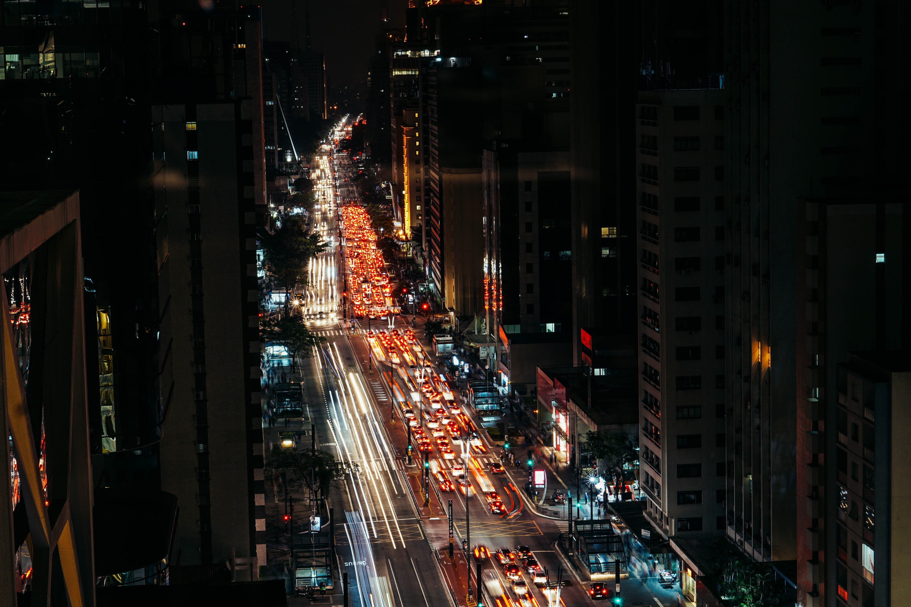

A Avenida Paulista é um dos logradouros mais importantes do município de São Paulo, a capital do estado homônimo. Está localizada no limite entre as zonas Centro-Sul, Central e Oeste; e em uma das regiões mais elevadas da cidade, chamada de Espigão da Paulista.
